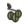
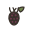

Актуальные садово-огородные рекомендации на сентябрь для региона «Урал и Сибирь». Ниже — список по декадам месяца; чтобы отфильтровать по типу работ, найти конкретную культуру или посмотреть другой месяц, откройте интерактивный календарь.
Резкие суточные перепады температуры и яркое зимнее солнце вызывают морозобоины (трещины коры с северной стороны от ночного холода) и солнечные ожоги (с южной стороны, от дневного нагрева) — своевременная побелка штамбов особенно важна в этом климате. Для снегозадержания у стволов раскладывают лапник или хворост; в начале зимы, в оттепель, снег у деревьев рекомендуется утаптывать 2-3 раза за зиму.
Подзимний посев холодостойких летников (календула, немахровые бархатцы) в конце октября - ноябре по подмёрзшей земле — более раннее и крепкое цветение на следующий год.
После сбора урожая — фосфорно-калийная подкормка жимолости (закладка цветочных почек будущего года идёт с конца лета); осенью в приствольный круг — перегной или компост с лёгкой заделкой.
Санитарная обрезка многолетников — обрезка отмерших листьев хосты, астильбы, бруннеры, гейхеры по мере естественного отмирания и полегания листвы в конце вегетации. Обрезка папоротника (удаление отмерших вай). Обрезка плюща для зимовки (укорачивание длинных плетей). Формирующую стрижку бересклета (изгороди, бордюры, шары) ведут в конце мая - июне и при необходимости повторно в конце лета — хорошо переносит стрижку и загущается.
Последнюю срезку щавеля проводят не позже середины сентября — растению нужно нарастить розетку перед зимой. В сухую погоду перед срезкой грядку поливают. На 3-4-й год щавель перезакладывают на новое место (лист мельчает, копится щавелевая кислота).
Огородные · Лиственные · Декоративные · Хвойные — Открытый грунт
Уборка и уничтожение растительных остатков с грядок, перекопка почвы с оборотом пласта (уничтожение зимующих личинок вредителей). Сбор и уничтожение опавших листьев роз, гортензии, клёна (источник грибковых спор). Искореняющая обработка приствольных кругов кустарников бордоской жидкостью. Осенняя профилактическая обработка хвойных (туя, можжевельник, самшит) медьсодержащим фунгицидом от шютте и грибных пятнистостей — при устойчивом дневном ниже +12 °C и до перехода днём ниже +5 °C. Профилактическая обработка ели и сосны медьсодержащим фунгицидом от шютте перед зимой. Для Урала и Сибири предпочтителен морозостойкий колхидский самшит — обычные южные сорта в этом климате, как правило, вымерзают без капитального укрытия на зиму. От тли, слюнявки-пенницы, паутинного клеща и трипса на георгинах — инсектицид/акарицид; кусты с признаками вирусной мозаики и бактериального рака (курчавость, деформация, наросты на корневой шейке) выкапывают и уничтожают. От мучнистой росы и ржавчины на лапчатке во влажные годы — обработка фунгицидом; при паутинном клеще в жару (побурение и осыпание листвы) — акарицид и дождевание.
Обработка почвы после уборки ботвы — биофунгицид «Фитоспорин-М» или «Триходермин» по пролитой поверхности, снижает запас спор фитофторы и других патогенов к следующему сезону. Саму ботву томата и картофеля не компостируют, а сжигают или выносят с участка.
Туя, Можжевельник, Самшит:
ХОМ (40 г на 10 л воды, не выше +30°C) или «Абига-Пик» (+5…+25°C) по кроне в сухую погоду — снижает риск грибковых пятнистостей и шютте под зимним укрытием, когда вентиляция ограничена.
Посев, посадка и высадка
Огородные · Сад — Открытый грунт
Продолжение подзимнего посева моркови, свёклы, редиса, зелени; посадка озимого чеснока и лука-севка под зиму, если не сделано в сентябре. Осенняя посадка саженцев винограда — в этом климате приживаются только по-настоящему морозостойкие и укрывные сорта с ранним сроком созревания (тёплого сезона не хватает на поздние сорта). В августе, когда спадает жара и холодают ночи, — повторный посев самых нежных ранних сортов салата, рукколы, шпината для осеннего сбора.
Влагозарядковый полив плодовых и ягодных перед зимой при отсутствии осенних дождей. Влагозарядковый полив хвойных и декоративных кустарников — в сентябре – 1-й декаде октября, пока почва в зоне корней не остыла ниже +4…5 °C.
Внесение перегноя/компоста и фосфорно-калийного удобрения под осеннюю перекопку для культур будущего сезона.
Препараты и процесс:
Перегной или компост — 3-4 кг/м², фосфорно-калийное удобрение (суперфосфат + сульфат калия, по 20-30 г/м² каждого) под осеннюю перекопку — фосфор и калий медленно доступны растениям и как раз успевают перейти в усвояемую форму к весне.


Мульчирование
Сад · Лиственные · Декоративные — Открытый грунт
Мульчирование приствольных кругов на зиму (утепление корневой системы) торфом или компостом. Мульчирование многолетников на зиму после осенней обрезки. Мульчирование приствольных кругов хвойных торфом или компостом. Мульчирование голубики хвойным опадом, корой или верховым торфом — сохраняет кислотность почвы и защищает корни зимой. Мульчирование винограда на зиму. Мульчирование приствольного круга жимолости перегноем, компостом или щепой слоем 5-8 см — корни поверхностные, страдают от перегрева и пересыхания; мульчу обновляют весной и осенью.
Санитарная обрезка сухих/повреждённых ветвей туи, можжевельника перед зимой (без формирующей стрижки). Удаление отцветших соцветий флокса — не давать завязывать семена (самосев вырождается, куст истощается); стимулирует боковое цветение. Осенью стебли флокса срезают у земли (5-8 см) и выносят с участка — на них зимует мучнистая роса; к корневищу сразу подсыпают компост или перегной (выпирает, оголяется).
Обвязка стволов молодых плодовых деревьев от грызунов и морозобоин, побелка штамбов. Пригибание побегов малины к земле для укрытия снегом. Выкопка клубней георгин и луковиц гладиолусов на зимнее хранение — в грунте средней полосы не зимуют. На зиму лилии мульчируют торфом или листвой слоем 10-15 см. Восточные гибриды, трубчатые и ОТ-гибриды — с укрытием от вымокания (лапник + плёнка/короб от дождя и оттепелей); азиатские и ЛА-гибриды зимуют без укрытия. В средней полосе и севернее лаванда зимует только с укрытием: основание окучить сухим песком или землёй, замульчировать хвойным опадом либо соломой, сверху лапник и воздушно-сухое укрытие. Торф и листву к шейке не класть (выпревание); осенью куст не поливать. На зиму молодой, недавно посаженный и пестролистный плющ снимают с опоры, укладывают и укрывают лапником и сухим листом со спанбондом. Главный вред — не мороз, а зимне-весеннее иссушение вечнозелёных листьев на ветру и солнце. Молодые посадки бересклета и вечнозелёные виды (б. Форчуна) на зиму мульчируют и прикрывают лапником — защита от выпревания и весеннего ожога; взрослые листопадные виды зимостойки.
Размножение одревесневшими черенками. Сбор семян летников — с полностью побуревших сухих корзинок и коробочек в сухую погоду. Сортовые F1-петунии и махровые бархатцы из семян не воспроизводятся; календула и настурция обильно возобновляются самосевом.